Дом 271 м² с мансардой и гаражом
Частный дом: 1-й этаж — гостиная с камином, кухня-столовая, кабинет, веранда, гараж и котельная; мансарда — четыре спальни, гардеробная, санузлы и спортзона в холле. Современное шале с эко-теплом: дуб и лиственница, натуральный камень у камина, у каждой комнаты свой цветовой акцент.
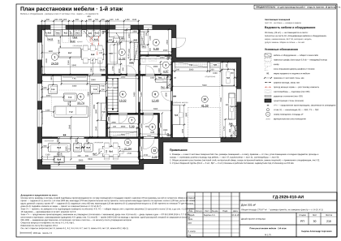
Про площадь. На картинке плана заказчика заявлено 331 м². Размеры на ней не читаются — их подобрал проектировщик, и общая площадь по экспликации альбома вышла 270,67 м²; она и стоит в названии. Точная площадь — после контрольного обмера.
Альбом для заказчика — проект в подаче студии: визуализации стоят перед развёртками своих помещений, у мебели на плане выноски с размерами. Не все кадры в нём сверены с планом и подписаны дизайнером — где кадр и чертёж расходятся, верен чертёж. Полный альбом — предварительный комплект для обсуждения: все разделы, ведомости и смета (что значит пометка «ПРЕДВАРИТЕЛЬНО» — в разделе о проверке на этой странице). Файлы большие — на мобильном интернете лучше качать по Wi-Fi.
Как оставить правку голосом
Писать письма со списком замечаний не нужно — правка ставится прямо на лист, к нужному месту чертежа.
- Откройте лист
Любой лист ниже или в PDF для заказчика: на каждой странице есть кнопка «Правка к этому листу».
- Нажмите на место
На чертеже появится метка — к ней и относится правка: «диван развернуть к окну», «розетку выше».
- Скажите голосом
Или напишите. Правок к одному листу может быть сколько угодно, есть правка ко всему листу.
- Отправьте одной кнопкой
Все метки уходят разом и привязываются к вашему заказу. Альбом перевыпускается с правками.
Если голосовой ввод в браузере не работает — нажмите микрофон на клавиатуре телефона.
Автопроверка оформления — и чего она не заменяет
Автопроверка оформления: 0 стоп-ошибок, 470 замечаний к доработке, 12 вопросов к заказчику — лист 08.
Стоп-ошибка
То, с чем комплект не выдаётся: проём не помещается в стену, лист вылез за формат, жилая комната без окна. В этом выпуске таких нет.
Замечание к доработке
Программа нашла место, которое стоит улучшить: плотная надпись, неполная привязка, рекомендация по нормам. Это не стоп-ошибки, но и не «всё хорошо» — их закрывают при перевыпуске.
Вопрос к заказчику
Решение, которое без вас не принять: несущие стены, оборудование, модель мебели. Вопросы собраны на листе «Открытые вопросы»; пока они не закрыты, на каждом листе стоит пометка «ПРЕДВАРИТЕЛЬНО».
Автопроверка смотрит оформление и явные нестыковки. Она не отвечает на главный вопрос — поймёт ли заказчик лист и сможет ли прораб по нему работать. Это проверяет автор, а окончательно — контрольный обмер и ваши ответы на вопросы. Комплект выпускается с пометкой «ПРЕДВАРИТЕЛЬНО», пока по объекту открыты вопросы к вам (лист «Открытые вопросы» в начале альбома) и не сделан контрольный обмер. По такому комплекту не строят: после ваших ответов и обмера перевыпускаем его без пометки.
Что внутри альбома
Шифр комплекта ГД-2026-010-АИ. Разделы идут в том же порядке, что в выданном альбоме: титульный лист и общие данные, открытые вопросы и задание на обмер, дальше разделы по специальностям, в конце — развёртки, узлы и смета.
Общие данные
7 листов
Вопросы, задание на обмер и график работ
11 листов
Архитектурные решения
9 листов
Планировочное решение
9 листов
Электрооборудование
15 листов
Отопление и вентиляция
4 листа
Водоснабжение и канализация
15 листов
Освещение
2 листа
Потолки и ГКЛ-конструкции
9 листов
Раскладка плитки
6 листов
Полы и отделка
7 листов
Цвет и материалы
4 листа
Декор и текстиль
9 листов
Встроенная мебель
17 листов
Развёртки стен, узлы и реестры
82 листа
Смета
10 листов
Что решалось на этом объекте
Планы по этажам
Каждый план выпущен отдельно для 1-го этажа и мансарды; этаж — в заголовке и штампе.
Потолки мансарды по скату кровли
Развёртки со скатом и отметкой его низа, площади стен и потолков по скату, высокая мебель под скатом проверяется отдельно.
Спортзона, гараж и веранда
Беговая дорожка и велотренажёр у конька, силовая стойка и верстак в гараже, летняя гостиная на веранде.
Такой же альбом на ваш объект
Проект начинается после оплаты: как платить, условия — на странице заказа до оплаты. Соседние работы — в портфолио, как устроена проверка — в разделе «Документация».
Общие данные
Зачем: Состав альбома, условные обозначения и исходные данные — с чего читать комплект и на что опираются остальные листы.
7 листов. Нажмите на лист — он откроется целиком, и к нему можно надиктовать правку.


Вопросы, задание на обмер и график работ
Зачем: Что ещё не решено и что замерить на месте: пока здесь есть открытые пункты, комплект предварительный. Тут же порядок закупок и работ.
11 листов. Нажмите на лист — он откроется целиком, и к нему можно надиктовать правку.

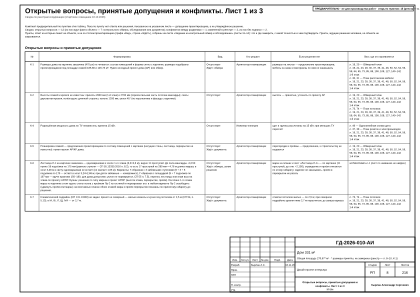
Лист 08Открытые вопросы, принятые допущения и конфликты. Лист 1 из 3
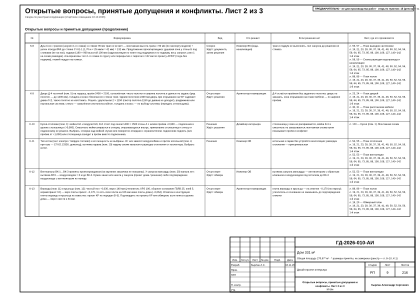
Лист 09Открытые вопросы, принятые допущения и конфликты. Лист 2 из 3
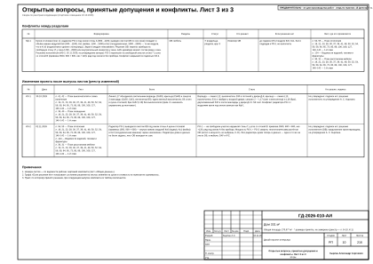
Лист 10Открытые вопросы, принятые допущения и конфликты. Лист 3 из 3
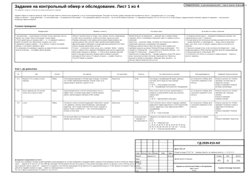
Лист 11Задание на контрольный обмер и обследование. Лист 1 из 4
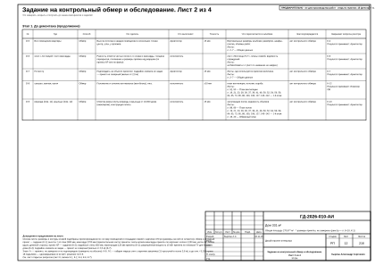
Лист 12Задание на контрольный обмер и обследование. Лист 2 из 4
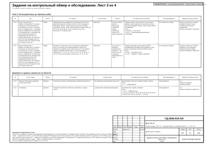
Лист 13Задание на контрольный обмер и обследование. Лист 3 из 4
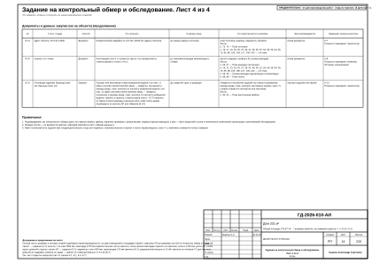
Лист 14Задание на контрольный обмер и обследование. Лист 4 из 4
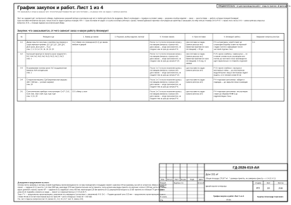
Лист 15График закупок и работ. Лист 1 из 4
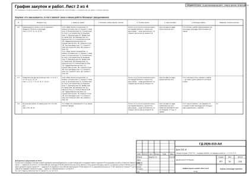
Лист 16График закупок и работ. Лист 2 из 4
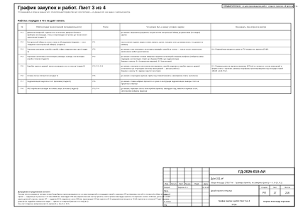
Лист 17График закупок и работ. Лист 3 из 4
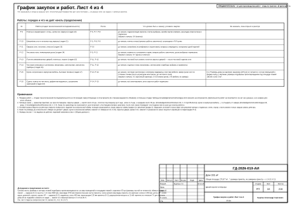
Лист 18График закупок и работ. Лист 4 из 4Архитектурные решения
Зачем: Что сносить и что строить: обмер, демонтаж и монтаж перегородок, двери — по этим листам бригада размечает стены.
9 листов. Нажмите на лист — он откроется целиком, и к нему можно надиктовать правку.

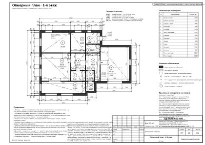
Лист 19Обмерный план · 1-й этаж
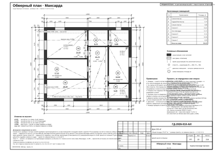
Лист 20Обмерный план · Мансарда
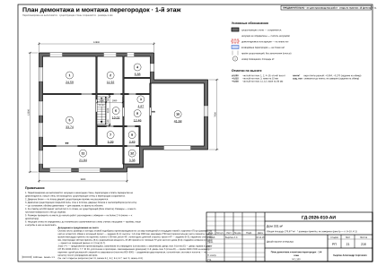
Лист 21План демонтажа и монтажа перегородок · 1-й этаж
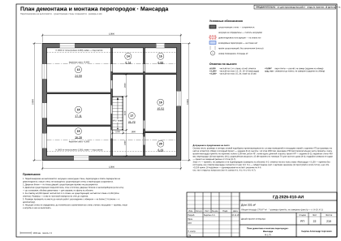
Лист 22План демонтажа и монтажа перегородок · Мансарда
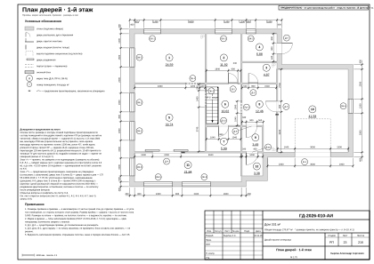
Лист 23План дверей · 1-й этаж
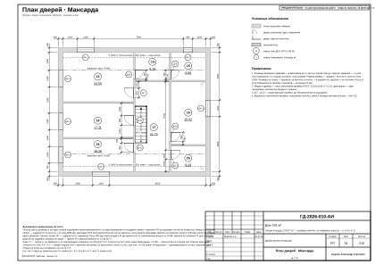
Лист 24План дверей · Мансарда
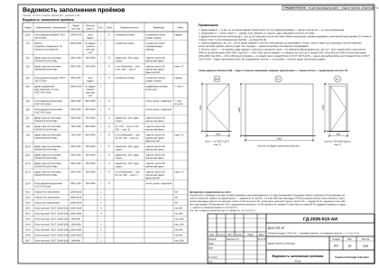
Лист 25Ведомость заполнения проёмов
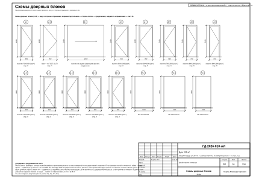
Лист 26Схемы дверных блоков Лист 27Лестница Л-1
Лист 27Лестница Л-1
Планировочное решение
Зачем: Где стоит мебель и с какими размерами — от расстановки считаются розетки, свет и выводы воды.
9 листов. Нажмите на лист — он откроется целиком, и к нему можно надиктовать правку.

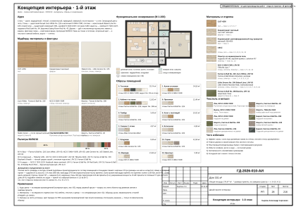
Лист 28Концепция интерьера · 1-й этаж
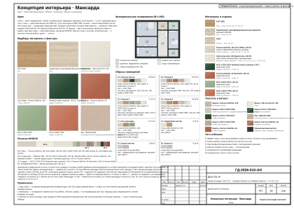
Лист 29Концепция интерьера · Мансарда Лист 30План расстановки мебели · 1-й этаж

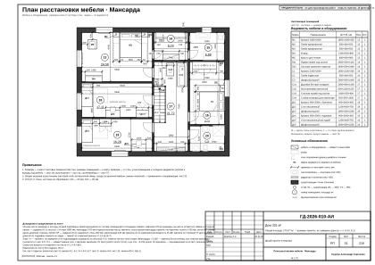
Лист 31План расстановки мебели · Мансарда
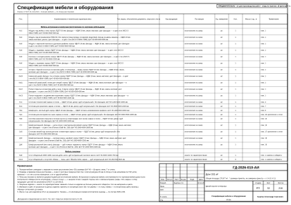
Лист 32Спецификация мебели и оборудования
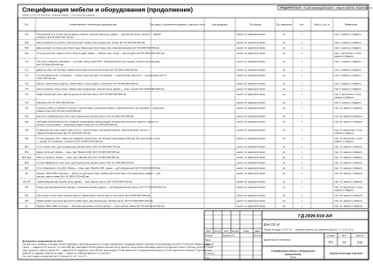
Лист 33Спецификация мебели и оборудования (продолжение)
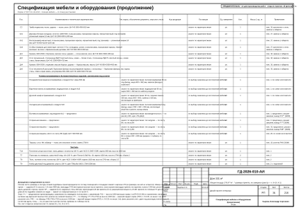
Лист 34Спецификация мебели и оборудования (продолжение)
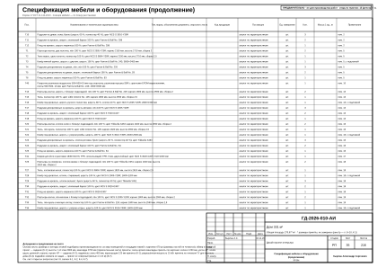
Лист 35Спецификация мебели и оборудования (продолжение)
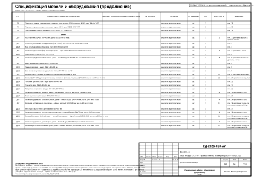
Лист 36Спецификация мебели и оборудования (продолжение)Электрооборудование
Зачем: Розетки и выводы с высотами от пола, привязками и группами щита — чтобы штробить один раз, до штукатурки.
15 листов. Нажмите на лист — он откроется целиком, и к нему можно надиктовать правку.

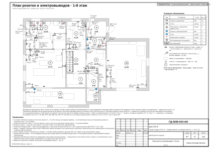
Лист 37План розеток и электровыводов · 1-й этаж
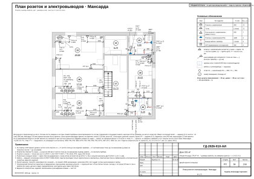
Лист 38План розеток и электровыводов · Мансарда
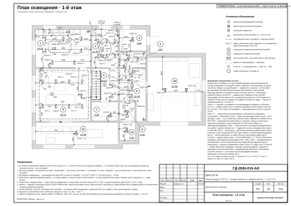
Лист 39План освещения · 1-й этаж
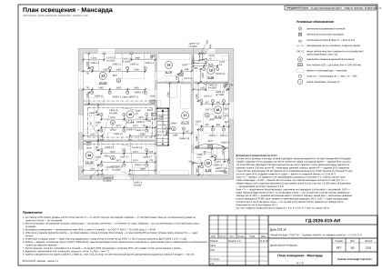
Лист 40План освещения · Мансарда
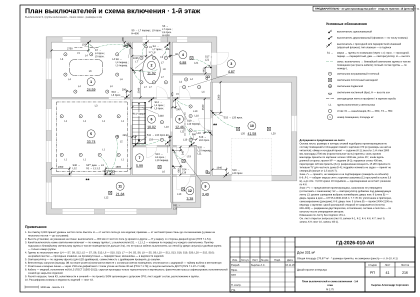
Лист 41План выключателей и схема включения · 1-й этаж
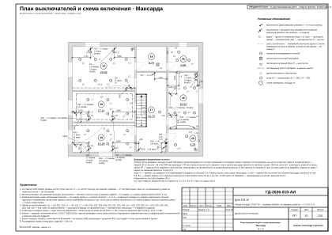
Лист 42План выключателей и схема включения · Мансарда
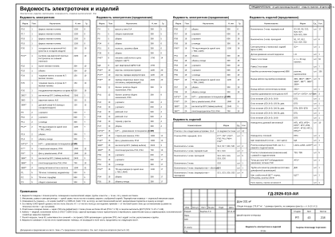
Лист 43Ведомость электроточек и изделий
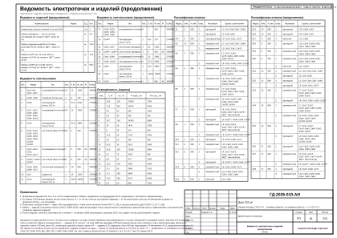
Лист 44Ведомость электроточек и изделий (продолжение)
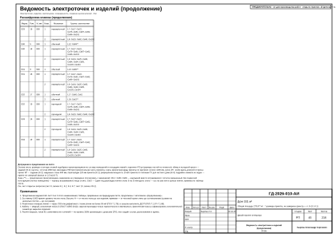
Лист 45Ведомость электроточек и изделий (продолжение)
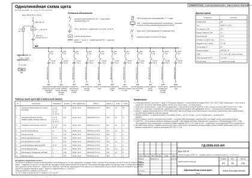
Лист 46Однолинейная схема щита
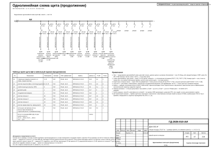
Лист 47Однолинейная схема щита (продолжение)
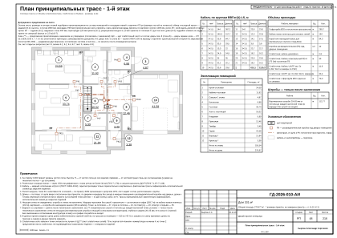
Лист 48План принципиальных трасс · 1-й этаж
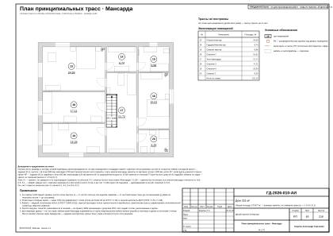
Лист 49План принципиальных трасс · Мансарда
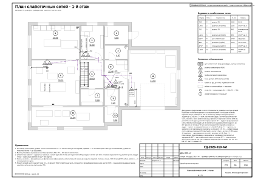
Лист 50План слаботочных сетей · 1-й этаж
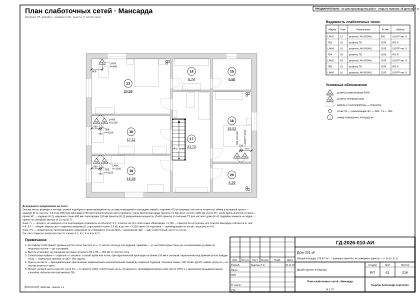
Лист 51План слаботочных сетей · МансардаОтопление и вентиляция
Зачем: Радиаторы, тёплый пол и вентиляция — что учесть до потолков и отделки.
4 листа. Нажмите на лист — он откроется целиком, и к нему можно надиктовать правку.


Водоснабжение и канализация
Зачем: Выводы воды и канализации с высотами и схема разводки — под конкретные приборы, до стяжки и плитки.
15 листов. Нажмите на лист — он откроется целиком, и к нему можно надиктовать правку.


Освещение
Зачем: Светильники, сценарии и спецификация — свет считается под мебель, а не по сетке на потолке.
2 листа. Нажмите на лист — он откроется целиком, и к нему можно надиктовать правку.


Потолки и ГКЛ-конструкции
Зачем: Уровни потолков, короба и перегородки из ГКЛ с разрезами и узлами — по ним собирают каркас.
9 листов. Нажмите на лист — он откроется целиком, и к нему можно надиктовать правку.


Раскладка плитки
Зачем: Откуда начинать раскладку, где подрезки и как швы сходятся с розетками и сантехникой.
6 листов. Нажмите на лист — он откроется целиком, и к нему можно надиктовать правку.


Полы и отделка
Зачем: Пироги полов с отметками и ведомость отделки по помещениям — сколько и какого материала.
7 листов. Нажмите на лист — он откроется целиком, и к нему можно надиктовать правку.


Цвет и материалы
Зачем: Колерная карта и спецификация материалов — цвет каждой поверхности по коду, а не «на глаз».
4 листа. Нажмите на лист — он откроется целиком, и к нему можно надиктовать правку.


Декор и текстиль
Зачем: Шторы, карнизы и декор с размерами — чтобы закладные под карнизы появились до покраски.
9 листов. Нажмите на лист — он откроется целиком, и к нему можно надиктовать правку.


Встроенная мебель
Зачем: Чертежи шкафов и кухни с монтажными схемами — мебельщик считает по ним, выводы сверяются с ними.
17 листов. Нажмите на лист — он откроется целиком, и к нему можно надиктовать правку.


Развёртки стен, узлы и реестры
Зачем: Каждая стена изнутри: отделка, розетки, выводы и мебель с размерами от угла и от пола.
82 листа. Нажмите на лист — он откроется целиком, и к нему можно надиктовать правку.


Смета
Зачем: Объёмы работ и материалов считаются с чертежей — по ним сравнивают предложения бригад строка за строкой.
10 листов. Нажмите на лист — он откроется целиком, и к нему можно надиктовать правку.


Свой проект — с того же места
Бриф — три шага, около 5 минут: план, картинки, которые нравятся, и рассказ своими словами (можно голосом). От 2 000 ₽/м², минимальный заказ 80 000 ₽; работа начинается после оплаты. Первый вариант проекта дома — до 72 часов от оплаты и получения плана с размерами.
Автор проекта — дизайнер-архитектор Кырлан Александр. В основной надписи листов этих альбомов указана его фамилия; телефона и почты на листах нет — они на странице контактов.